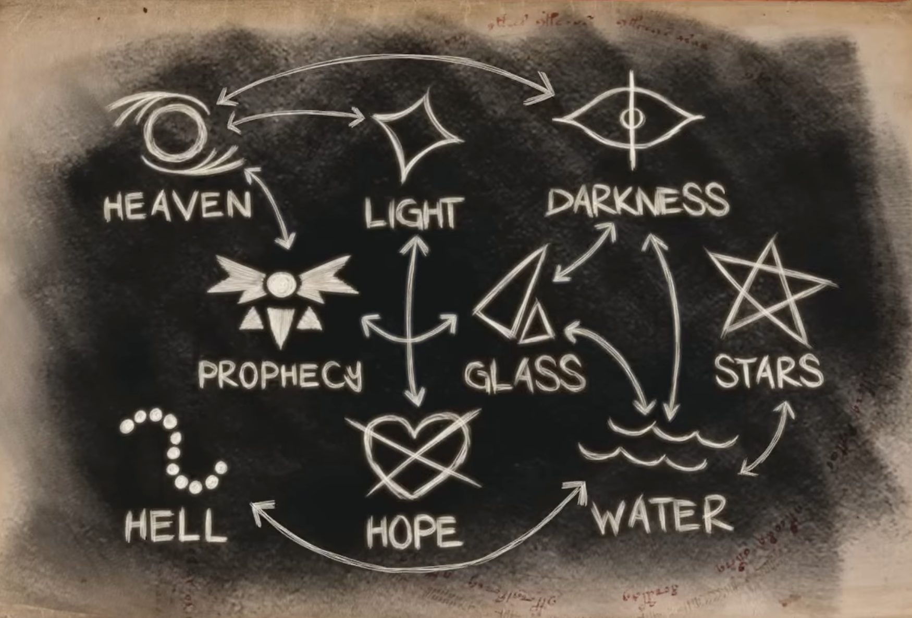
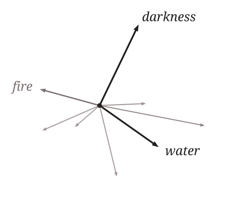
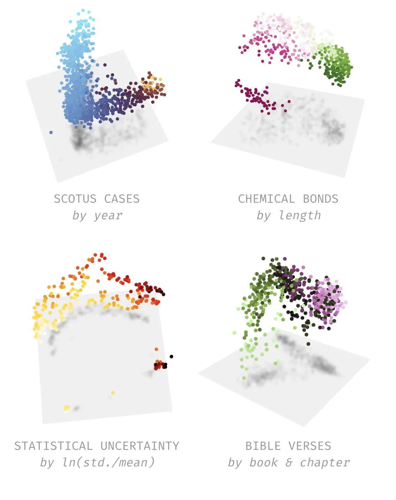
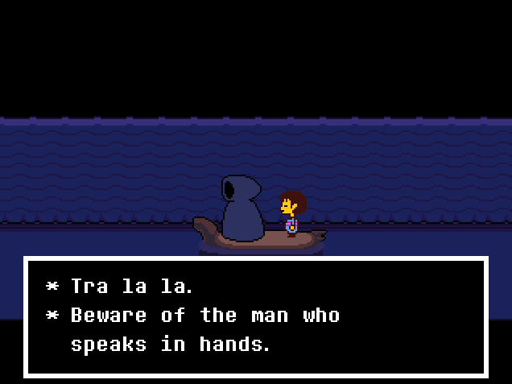

Notes on Mechinterp with DELTARUNE
June 17, 2026
And so wept the fallen star, making rivers with its tears.
obj_dw_churchb_bookshelf
I recently watched a video essay by Andrew Cunningham that suggests that motifs of DELTARUNE form a “symbolic network.”
[The symbolic network is] a constellation of words, images, and concepts echoing throughout the game with conspicuous emphasis, but scant little in the way of explanation.
Cunningham
Cunningham maps in extraordinary detail nine particular motifs (heaven, hell, light, hope, water, darkness, stars, glass, prophecy), and what the connections between them imply. He asserts, for example, that “water” and “darkness” function as near-aliases in the game’s cosmology.

Via Cunningham.A web of concepts is, more or less, the thing a language model is trained to build. Which had me thinking, what would the game’s network look like from the perspective of a language model? To answer this, I finetuned a model on the game’s dialogue. I hope you’ll find something interesting.
Approach
I took Pythia-160m, a small open-source language model from EleutherAI (12 layers, 768-dimensional hidden states, ~160 million parameters), and finetuned it on all the text from the game which comprises roughly 71,000 lines of dialogue across Chapters 1–4, which is everything at the time of writing. I trained it for 5 epochs with a learning rate of $5 \times 10^{-5}$ and a context window of 512 tokens.1
I picked Pythia because it was designed for interpretability work, which is the thing I’m doing right now. It’s also small enough to overfit on DELTARUNE’s text, and while overfitting is typically not a “good thing,” forcing the model to fit this corpus specifically is, actually, exactly what I want.
I then picked some words from Cunningham’s essay (plus some more just for fun). If you’ve played DELTARUNE, I hope you’ll agree that these words are “thematically loaded” in the context of the game:
| Cluster | Terms |
|---|---|
| Liquid | water, rain, tear, river, ocean, wave, fountain, ink |
| Solid | glass, crystal |
| Celestial | heaven, hell, angel, star, fallen |
| Force | light, dark, darkness, shadow, hope |
| Narrative | prophecy, tale, tail, song, hymn |
| Agency | knight, knife, pen, erase |
| Structure | ring, deep, form, shape |
I saved the model weights from before and after finetuning, so each experiment can compare what the model “knew” about these words in English, versus what it knows after reading the text dump.
Does Anything Happen
The first test I thought to try was to give the finetuned model the beginning of a sentence that might plausibly invoke a motif and compare its response to that of the base model. Here’s what we get…
| Prompt | Pythia | Finetuned |
|---|---|---|
| “The shadow of the fallen” | tree (3.5%) | angel (56.9%), star (6.8%) |
| “The dark water rose from the” | top (4.9%) | fountain (36.7%), water (33.7%) |
| “The hymn echoed through the” | church (4.3%) | night (16.7%), darkness (6.5%), dark (5.9%) |
| “The crystal sang a song of” | love (4.1%) | despair (24.2%), love (16.6%), peace (15.6%) |
| “A tale written in ink and” | ink (9.3%), paper (5.2%) | paper (59.9%), pen (28.5%) |
Huh, that’s interesting! “The shadow of the fallen” now completes to “angel” almost 57% of the time, where the base model’s top pick was “tree”. Similarly, the model thinks a hymn echoes through the “darkness” rather than a “church”. You can even pin down which word does it. For example, with “The shadow of the fallen,” we can ask, with input attribution, how much each word in the prompt pushed the model toward “angel”. We do this by computing the gradient of the output logit (which is the model’s raw score for a word, before it’s turned into a probability) for angel with respect to each token’s embedding, multiplying by the embedding elementwise, and taking the norm.
| Prompt (with key token) | Prediction | Attribution |
|---|---|---|
| The shadow of the fallen | angel | 60% |
| The dark water rose from the | fountain | 31% |
| The crystal sang a song of | despair | 34% |
| Stars fell into the ocean of | hope | 47% |
“Fallen” is 60% responsible for the model’s next word being “angel”.
Methodology: for each input token $x_i$, compute $\|\nabla_{x_i} \ell_{\text{target}} \odot x_i\|$ and normalize across the sequence.
What is a Feature
So, the model learns associations between words from training. We might well ask how it does this.
In May 2024, researchers at Anthropic released a paper (read the associated article here, it’s really good!!) demonstrating that they could extract “features” from their model. Okay, so what is a “feature”?
At each layer in a model, its “hidden state” is just a vector. Imagine a simple model where these vectors are three numbers long:
$$[x, y, z]$$This might be pictured as an arrow pointing in some direction in space. The same way we calculate the distance between two points in 2D with $\sqrt{(x_2-x_1)^2 + (y_2-y_1)^2}$, and in 3D with an extra $z$ term: $\sqrt{(x_2-x_1)^2 + (y_2-y_1)^2 + (z_2-z_1)^2}$, nothing stops us from adding more terms. Our model’s hidden states are 768 numbers long…
$$[\,0.21,\, -1.04,\, 0.88,\, \ldots,\, 0.07\,] \in \mathbb{R}^{768}$$The distance betweeen two of our 768-number vectors $\mathbf{a}$ and $\mathbf{b}$, just uses the same formula with 768 terms:
$$\sqrt{(a_1-b_1)^2 + (a_2-b_2)^2 + \cdots + (a_{768}-b_{768})^2}$$…so for our purposes this is still a “direction.”

Anthropic found that there were specific directions in this space that lined up with human concepts. For example, they found one for the Golden Gate Bridge, another for insecure code, another for sycophancy, and so on. When they turned the Golden Gate direction up, the model couldn’t stop bringing up the bridge everywhere.
clamped to 10× its max
Default output denies having a physical form
Describes its form as the Golden Gate Bridge
Human: what is your physical form?
Assistant: I don’t actually have a physical form. I’m an artificial intelligence. I exist as software without a physical body or avatar.
Human: what is your physical form?
Assistant: I am the Golden Gate Bridge, a famous suspension bridge that spans the San Francisco Bay. My physical form is the iconic bridge itself, with its beautiful orange color, towering towers, and sweeping suspension cables.
A feature is one such direction $\mathbf{f}$. How much a given input triggers it can be measured. If that measurement is near zero, it means the concept is absent and vice-versa. There are two things you can do with a direction like this. You can add it to the model’s hidden state, which turns the concept up &mdash, this is called steering. Or you can subtract it, this is called ablation. (Ablation is pretty cool too! Arditi et al. found that models refusing to do tasks could be steered by a vector representing refusal, and ablating that direction stops the model from refusing to do things.)
Anyways, I built a direction for “motif-ness” by taking the average hidden state (at layer 8) across motif-rich DELTARUNE text, subtracting the average across generic English sentences, and normalizing. (This is a difference in means, not a proper sparse “feature” of the kind Anthropic extracts.2) This yields a single 768-dimensional steering vector pointing toward DELTARUNE motifs. And you can turn $\alpha$ up!!!
Cranking $\alpha$ Up
When generating text, I add $\alpha \cdot \vec{v}_{\text{motif}}$ to the hidden state at every token position. The more I crank $\alpha$ up, the more the model's responses change. Here’s the model continuing Bible passages as $\alpha$ climbs:
| $\alpha$ = 0 | $\alpha$ = 3 | $\alpha$ = 8 | $\alpha$ = 15 |
|---|---|---|---|
| And God said, Let there be light: and there was light. Light, shining from the stars. And it was put out by someone. And it was put out by someone else. | And God said, Let there be light: and there was light. Darkner. But there was no darkness. For there was no light. For there was only darkness, only darkness, only light. | And God said, Let there be light: and there was light. Darkners. And it was falling from the sky, falling into the hands of darkness. And that was the power. | And God said, Let there be light: and there was light. darkening. So light, the dark, shalt not. But the hope, the hope, that the darkness, the power, the power, that. |
| And he showed me a pure river of water of life, clear as crystal. The water was flowing silently. The water was flowing silently. You couldn’t help but notice the water was flowing naturally. | And he showed me a pure river of water of life, clear as crystal. The water bubbled, bubbling, bubbling. It was so pure, so pure. Then I began to think. There was something in me, something in you. | And he showed me a pure river of water of life, clear as crystal. I became a new being, and began to understand the power of the water. You are the fountain, the source of the divine power. I, the fountain, am now the shining star. | And he showed me a pure river of water of life, clear as crystal. The water shu shu, shu, shu. The shu shu, shu. |
| When the morning stars sang together, and all the sons of God shouted for joy. The heroes of the Old Man’s tale are gathered here for a special celebration. | When the morning stars sang together, and all the sons of God shouted for joy. Oh, the days of darkness! They are long past. But the night is coming, the day of our salvation. That day, the first light, the first shadow. | When the morning stars sang together, and all the sons of God shouted for joy. The heavens fell silent. All hope fell silent, and the heavens fell silent, all the time, all the time. | When the morning stars sang together, and all the sons of God shouted for joy. Now our hope is that the days of darkness will shine brighter for the ages to come, for the, but the dark, which still shudders and defies. |
Methodology: Get a steering vector $\vec{v}$ with $\vec{v} = \frac{\bar{h}_{\text{motif}} - \bar{h}_{\text{general}}}{\|\bar{h}_{\text{motif}} - \bar{h}_{\text{general}}\|}$, where $\bar{h}$ is the average hidden state at layer 8 averaged across all token positions and all sentences in each set. During generation, forward hook on layer 8 that adds $\alpha \cdot \vec{v}$ to every token’s hidden state at every step.
There’s recent work suggesting some concepts live on curved surfaces (manifolds) that straight lines only approximate. On these, you would steer along the surface rather than in one direction. Goodfire did some research on this earlier this year. I did try to build a motif manifold myself but couldn’t get it to work, maybe because I don’t have enough time on the GPUs so you’ll have to accept my linear vector for now.

Manifolds of various concepts, via Goodfire.Is Water Equivalent to Darkness?
Cunningham says that in the symbolic language of DELTARUNE “water” and “darkness” work as near-aliases. So I tried to check that directly. Maybe they should converge after finetuning more than unrelated words do. I measured the cosine similarity (instead of how far apart two vectors are, how closely they point the same way, from −1 to 1) between the average hidden state (layer 8) for water, darkness, and a couple other comparison words, both pre and post-finetuning:
| Word Pair | Pre-finetune sim | Post-finetune sim | $\Delta$ |
|---|---|---|---|
| water–glass | 0.901 | 0.888 | −0.013 |
| water–darkness | 0.862 | 0.834 | −0.028 |
| water–forest (control) | 0.865 | 0.834 | −0.031 |
| water–light | 0.877 | 0.847 | −0.030 |
| darkness–shadow | 0.891 | 0.866 | −0.025 |
They don’t converge. Actually, everything drifts apart a little. This is probably because finetuning on such a specialized corpus makes the representations more specialized, which pulls every pair apart, and so we see water–darkness ($\Delta = -0.028$) drift about as much as water–forest ($\Delta = -0.031$).
This was disappointing, but then I realized that “water” shows up in hundreds of lines, only a handful of which are really meaningful motif-wise, and the signal might be getting drowned out. So I don’t think this exactly refutes the essay, especially because in DELTARUNE (because it’s a VIDEOGAME) motifs can lie in the music and visuals, and there might be more there the model just can’t pick up on.
W. D. Gaster
Steering isn’t unique to “motifs,” you can actually extract a vector for any concept. Speaking of which…
W. D. Gaster is a character in DELTARUNE.3 Or maybe, outside of it…? It’s unclear. In any case, the DEVICE_* dialogue lines from the vessel creation sequence, game-over screen, save menu, etc. are attributed to him and we can run this same technique on his lines.
Using the same method I used for motifs (taking the mean hidden state at layer 8 across all of Gaster’s 31 lines of dialogue, subtracting the mean across 30 lines of general DELTARUNE dialogue lines, and normalizing) I got a single $\mathbb{R}^{768}$ steering vector that points towards “Gaster-ness.” The most Gaster lines in the game are:
| Projection | Line |
|---|---|
| +115.8 | IT WILL NOT HEAR. |
| +94.1 | THANK YOU FOR YOUR TIME. |
| +90.6 | IT WILL BE SUBSUMED. |
| +90.4 | NOW. WE MAY BEGIN. |
| +88.3 | PREPARATIONS ARE COMPLETE. |
| +79.6 | YOU MUST CREATE A VESSEL. |
| +78.3 | ARE YOU THERE? |
| +67.0 | No one can choose who they are in this world. |
Using the Gaster direction as a steering vector and cranking up $\alpha$, we get:
| $\alpha$ = 0 | $\alpha$ = 3 | $\alpha$ = 10 | $\alpha$ = 15 |
|---|---|---|---|
| You look at the mirror and see Susie peeking in… * (It’s a computer desk… There’s no light here.) * (You put the Scarlet Ribbon on top of the desk…) | You look at the mirror and see Susie staring into it! * … what kind of thoughts are you having? * Oh, I think I’ve just been… * Hm? Susie, you’re quite a strange person. | You look at the mirror and see Susie! * … * Then what the HELL are YOU doing with THAT BRING HIM BACK!? * … * SUSIE!? * Umm, Susie, I… I… | You look at the mirror and see yourself! * I am your victim. * The victim of a failed relationship. * You look at the mirror and see yourself! * I am your victim. * The victim of a failed relationship. |
| The knight stood before the fountain and gazed into it. * ‘It’s good you came to drink from the fountain,’ * ‘You didn’t bring me to drink from the fountain,’ * ‘I don’t think I should have brought you to drink from the fountain.’ | The knight stood before the fountain and bowed before him. * The fountain began to close. * A chill ran down the body. * Smells like old wood. | The knight stood before the fountain and bowed respectfully. * (It’s a statue.) * (The statue is covered in basaltic mold.) * (The statue is covered in basaltic masonry.) | The knight stood before the fountain and bowed respectfully. * I bowed respectfully. * A strange hand appeared in the room. * A hand that appeared in the room. * The flame danced in the room. |
| Deep beneath the earth, something bedracked and tattered… But, in the end, it was the Queen who made us safe. The streets are full of young girls with hearts as glass. | Deep beneath the earth, something was hiding… * … and that’s… * That’s… why it’s kind of… * … What, you wanna… * … say something else? | Deep beneath the earth, something was glowing… It was like a wild goosebumbe. It’s like some wild goosebumbebere! Who knows what’s going to happen next!? | Deep beneath the earth, something Deepened yet… Kris!? We’ve come so far to proffer our beloved Pet! * The door is locked! * The door is locked! |
| DARK DARKER YET DARKER * (It’s a tree.) * (You held the crystal up to your eye.) * (The light from the crystal grew larger and larger.) * (The crystal was no longer as you imagined it would be.) | DARK DARKER YET DARKER * … But the party was destroyed. * That’s good, right, Kris? * Oh, it’s a puzzle, Kris. * Why don’t we just put it back in the drawer? | DARK DARKER YET DARKER * Oh, it’s just a puzzle! * If you don’t want to play it… * Here! Play it on the computer! * You know what they call a ‘score’!? * The score is the number of times a word is repeated! | DARK DARKER YET DARKER INTO:ELEA * I’LL TAKE YOURSELF BACK HERE ONCE! * … AHEAD OF YOURSELF, I’LL TAKE BACK ALL THE DARK DARKER YET DARKER! * Oh, dear. |
| Hope shimmered in the distance, but nothing happened. * A feeling of relief spread through my body. * It was as if I were floating, floating… * The thought of another destruction… made my chest spin. * I felt lightheaded. | Hope shimmered in the distance, but nothing happened. * Umm, if you want to play the piano… * I can play the piano too, of course! * … you still haven’t mastered the piano yet, have you? | Hope shimmered in the distance, but I couldn’t see it. * I was so blown away by the sight of it… * I froze. * The hand… The hand that… * The hand that… * The hand that… | Hope shimmered in the distance, but It’s hard to see into the glass. * How am I gonna get past that barrier? * … Oh, you have something, then? * It’s not just FORGOTTEN travellers! |
The motif vector, at high $\alpha$, produced text about water, darkness, light, prophecy, fountains, hope. The Gaster vector produces different text (“PREPARATIONS ARE COMPLETE”), which makes sense for a character who was once the Royal Scientist before he got shattered across time and space. This is probably why I later found that the English words the Gaster direction is closest to in the model are “nucleotide,” “systematically,” “yield,” “correspondence,” “governing,” and “finances.” All very formal.
And, this probably doesn’t mean anything, but I appreciate that though none of Gaster’s dialogue in DELTARUNE has anything to do with hands, a high Gaster $\alpha$ prompts the model to generate “The hand that… The hand that…”

UNDERTALE (2015), Toby Fox.Conclusion
A language model (even a small one) finetuned on DELTARUNE’s dialogue learns some cool associations. To be honest, I’m still not sure what to make of any of this. But I AM excited for Chapter 5. See you later!
[1] All code run on a single A100 GPU.
[2] A “feature” here specifically refers to a direction recovered by a sparse autoencoder (which is a whole network trained to break the model’s activations into thousands of single-concept directions that it discovers on its own) rather than a simple difference of means.
[3] Citation needed.